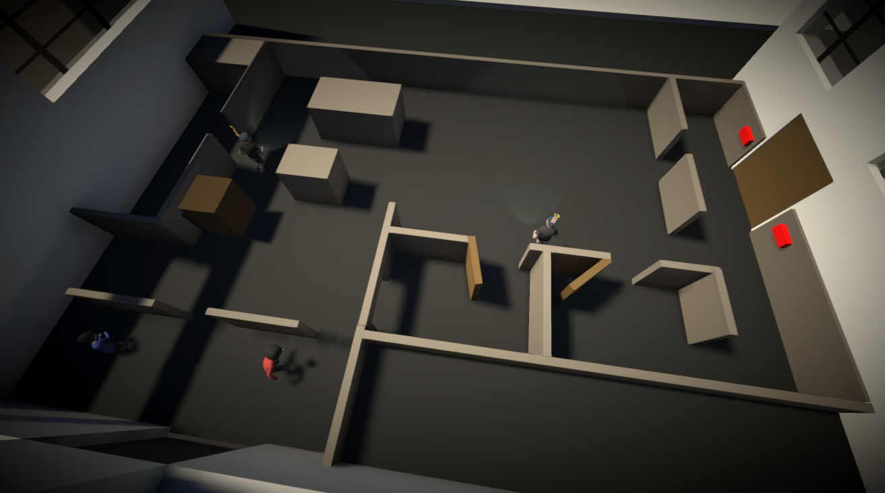
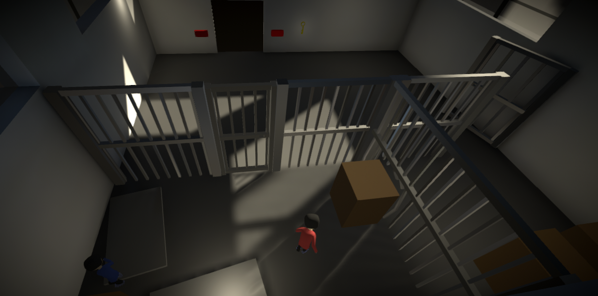

Brothers

Description
None
Screenshots & Images


Play The Game
Feedback & Comments
"I played this on my own and the controls took some time to get used to -- although I am extremely thankful you took the time to add controls pop-up because the keybinding wasn't very intuitive, and I would've struggled a lot more if it weren't for those tips, that's a 5/5 in game design right here ;). I like the stealth mechanics and how you have to use the small brother to trap the guards with boxes. Graphics are simple but the post-processing add a lot to the whole picture and the game is pleasant to look at. I also like how you built a small narrative with the thumbnail and would've loved to see that expanded because with things like an intro cutscene. Only real problem I encountered is that the webgl version was stuck in an endless loading screen after the 3rd level so I couldn't complete the game, which is a shame because I would've loved to see the ending. Great work!" - Tactoe
"Thank you for playing my game, there is a screen at the end that says thanks for playing. It's too bad that unity web GL has lots of issues. I never can release a game on that platform and have everything work. A cutscene would be cool, I mocked one up, but it wasn't coming together in time, so I scrapped it. Essentially your big brother was dragged it and thrown into the cell with you. Beaten and bruised from some interrogation off-screen." - IllogicalDesigns (Developer)
"Very nice game. The music and the art suited the gameplay :)" - Nageswar
"Nice stealth game! Really good work with the theme with the 2 brothers working together. Found a lot of games with a similar idea, but most of them focus on one of the 2 or 3 characters. Here I feel it well balanced between the small and the big one. I enjoyed the controls, played it with a X360 Gamepad. Although sometimes I screw it up when confuse which brother was with the left and which one with the right, during a failed attempt to escape the guards. The graphics are simple, but works fine on this kind of games. Love the camera position on the levels, and great work with the shading when hidden behind a wall (Shader graph?) Amazing work! Congratulations!" - LordDiego
"Thanks for the feedback, I did use shader graph for the hidden behind effect, I used this Brackey's tutorial. It felt right for this jam." - IllogicalDesigns (Developer)
"Ohhh yes! I remember that Tutorial. Will check it again for some tweaking in my game. Thanks!" - LordDiego
"A bit hard to play solo, but I enjoyed it. Reminds me of \"A way out\". Controls are a bit weird though. Also like the AI, it's smarter than I expected" - Cookin' Kunkka
"Yeah, I tried my hardest to work out the controls, never found a good solution. Glad you found the AI to be smart, I spent too much time on that aspect of the game. Thanks for playing." - IllogicalDesigns (Developer)
"Nice mix of puzzle and stealth. Graphics are nice and music fits really well. It is a bit hard for me to play both characters. Sadly I have no one to play with right now. But yeah. Well done!" - Hugison
"Thanks for playing, I got a lot of feedback about the difficulty of controlling both characters. I'm glad you were able to enjoy it even with that." - IllogicalDesigns (Developer)
"This was such a great game! Really a massive hidden gem of the jam. The gameplay totally reminded me of Brothers: a tale of 2 sons. Using the keyboard was a little awkward but the inclusion of gamepad was perfect design choice! I had a lot of fun with this one. There was some definite areas that needed improved like the camera, collisions, transitions between levels and movements speeds. But don't take that as an insult. What you had was great and I had a blast playing all the way through!" - Mech Mind Games
"This is a great concept! Definitely didn't expect to be squashing anybody!" - Nim&Kev
"Great job! Hard to manage playing in solo, but I could handle it. Both character has own weakness and strongness which I like." - neelkoos
"Good game! I liked it, especially the stealth mechanics, I feel those were nicely implemented." - Cab
"I like the art of the two brothers, controls feel a tad awkward though. Good Work Bro! The Game is has Good Concept and The GamePlay is also Outstanding!" - Tellyhead
"Its a really good game. I like it. The art is is nice and it's an interesting concept. The only issue I could find is that it's kind of hard to control both have the brothers at the same time and some of the puzzles require you to do it. But still very good game and I really enjoy the concept." - Human INC